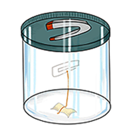

¿Quieres ver como un clip queda suspendido en el aire como por arte de magia?
Pues no dejes de experimentarlo, con el siguiente experimento casero.
Materiales:
- Hilo o cuerda muy fina
- 1 imán
- 1 clip
- Cinta adhesiva
- 1 frasco de vidrio con tapa metálica (un frasco de conserva servirá)

Instrucciones:
- Corta la cuerda del mismo tamaño que el alto del frasco.
- Ata el clip a un extremo de la cuerda.
- Con cinta adhesiva, pega el otro extremo de la cuerda a la parte inferior dentro del frasco.
- Pega (con cinta adhesiva) el imán al interior de la tapa.
- Coloca la tapa en el frasco y voltea el frasco para que el clip cuelgue de la cadena.
- Cuidadosamente, voltea el frasco a su lado correcto para que el clip continúe siendo atraído por el imán.
Explicación: